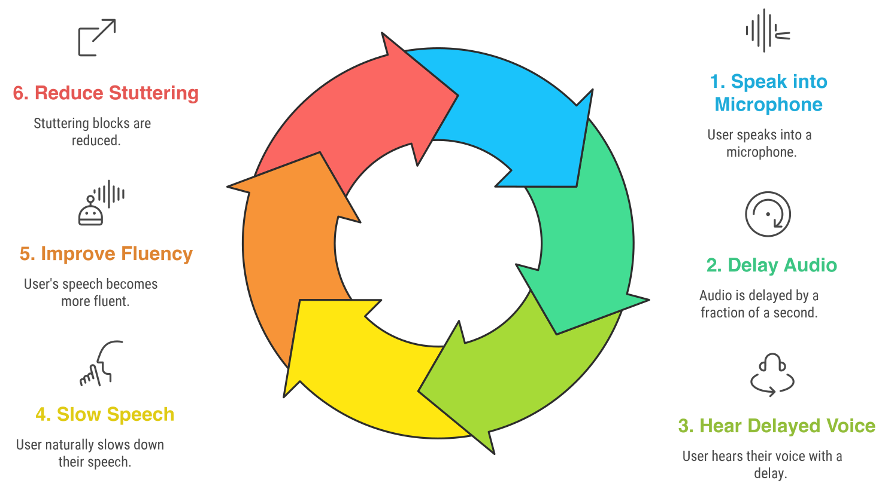
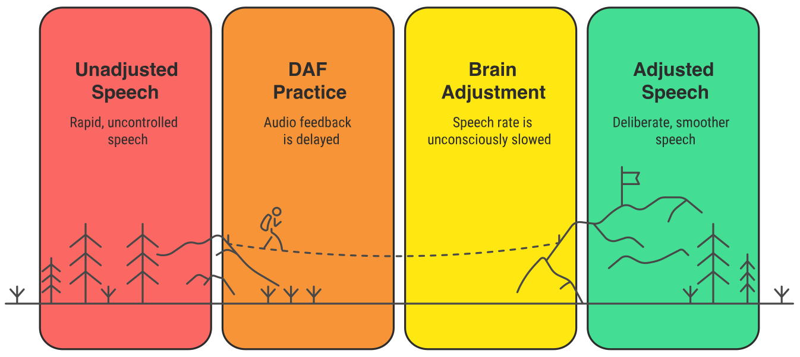
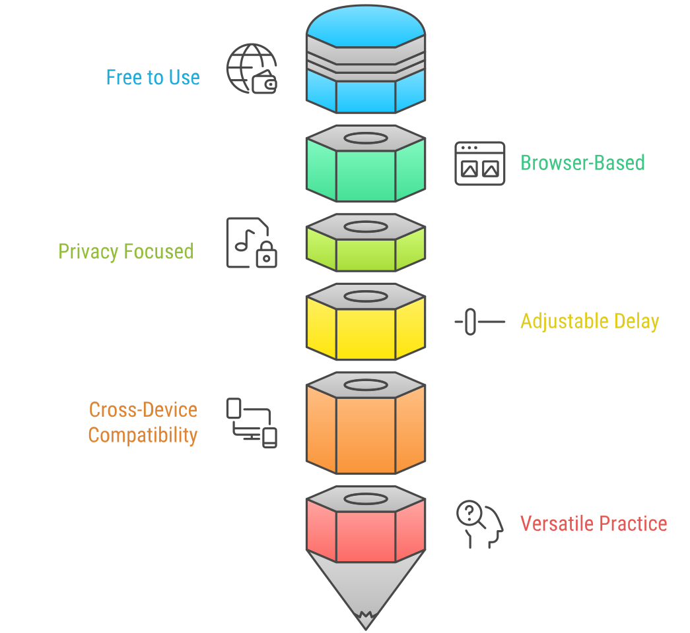
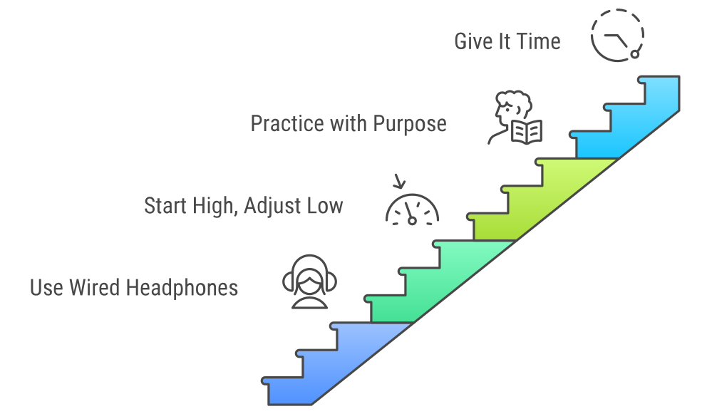
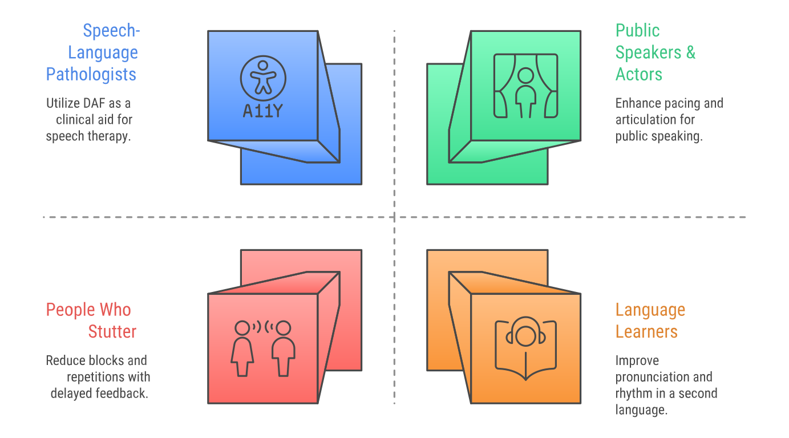
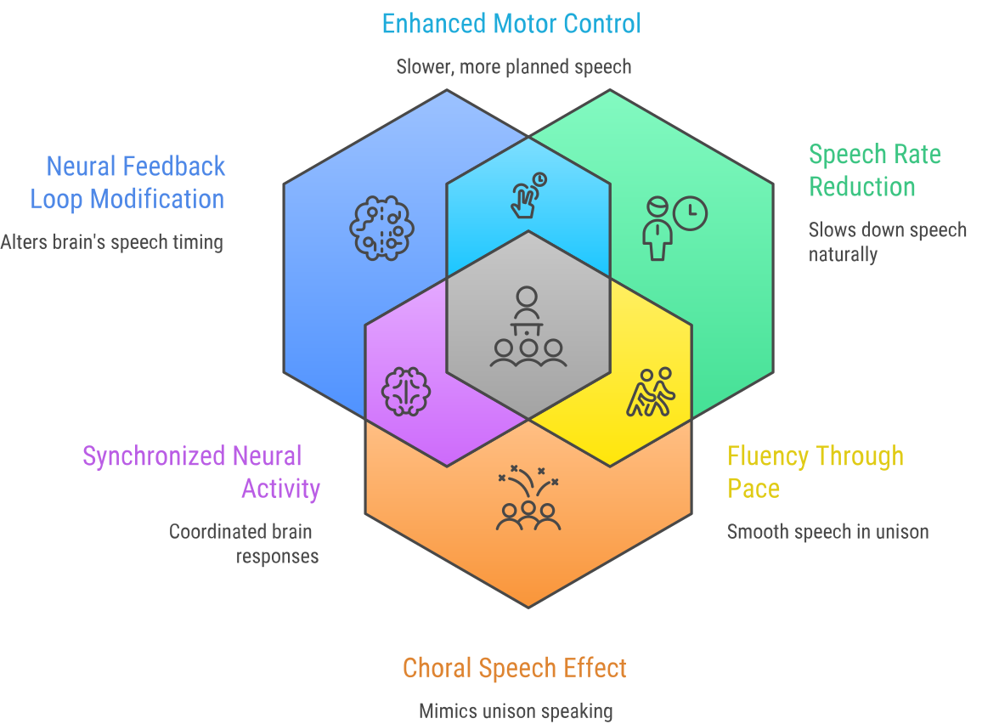

Waiting to connect to microphone
00:00
Privacy-First: Your voice never leaves your device! All audio processing is done locally on your device.
What is Delayed Auditory Feedback (DAF) for Stuttering?
If you've ever worn headphones while speaking and heard your voice played back with a slight delay, you've experienced the sensation that DAF creates. Delayed Auditory Feedback is a form of altered auditory processing where you hear yourself speak a fraction of a second later than usual. While this technology is often used in "Speech Jammer" experiments to demonstrate how Delayed Auditory Feedback (DAF) can temporarily disrupt speech in fluent speakers, this app is specifically designed as a therapeutic tool for fluency training and speech rate control.
That tiny delay naturally encourages the speaker to slow down. For those seeking effective stuttering management, this effect can be transformative. Professional Speech-Language Pathologists (SLPs) have used DAF for decades as an evidence-based stuttering fluency shaping technique. Research supports DAF as a fluency aid for many individuals, though responses vary by person and study.

We built this app to provide a non-pharmacological treatment aid that is accessible to anyone. No downloads, no signup forms, and no payment information required.
Medical Disclaimer: The DAF Online App is provided as an informational and practice tool to assist with speech fluency. It is not a substitute for professional medical advice, diagnosis, or treatment. If you have significant concerns about stuttering, please consult a qualified speech-language pathologist (SLP) or licensed healthcare professional.
How does Auditory Feedback work in this DAF Tool?
Normally, your brain hears your voice the instant you speak. DAF introduces a delay of 20 to 500 milliseconds. Your brain notices the timing shift, and you unconsciously adjust your speech rate, slowing down and becoming more aware of articulation. Clinical studies most commonly report effectiveness in the roughly 50–200 ms range, though individual preference varies.

Why Use This Online Stuttering Aid?
This free DAF software functions as a web-based online stuttering aid, eliminating the need for downloads while providing professional-grade delayed auditory feedback.
- Accessible at no cost with no premium paywalls.
- Works in your browser on mobile, tablet, or desktop.
- 100% privacy: audio never leaves your device.
- Adjustable delay (0–500 ms) to find your preferred setting.
- Ideal for home practice or professional speech therapy exercises.

Getting the Best Results
Use wired headphones. Bluetooth can add variable latency which may interfere with DAF timing. Many consumer Bluetooth setups add substantial latency (often 100–300 ms). Your results may results vary by device.
Start at 200 ms. Gradually decrease the delay until you find what feels most comfortable; research commonly reports effectiveness within ~50–200 ms.
Practice with purpose. Try reading a paragraph or practicing a speech to notice fluency improvements.

Ready to give it a shot? Jump to the app above and start experimenting with what works for you.
Normally, your brain hears your voice the instant you speak. DAF introduces a delay of 20 to 500 milliseconds. Your brain notices the timing shift, and you unconsciously adjust your speech rate, slowing down and becoming more aware of articulation.
What Users Are Saying
“This app helped me slow down and speak more clearly. I use it before every presentation.”
- Alex R.
“As a speech therapist, I recommend this to clients who need at-home fluency practice.”
- Dr. L. Moreno
Who Can Benefit from DAF?
DAF supports anyone aiming to enhance speech clarity and rhythm.

People Who Stutter
DAF’s most well-documented use is reducing stuttering blocks and repetitions. By providing a slightly delayed version of your own voice, DAF helps compensate for timing discrepancies in the brain's auditory feedback loop. This creates a "choral-speech" effect, allowing fluency to emerge naturally during practice sessions. Results vary by individual; we recommend a trial period to see if your speech profile responds to DAF.
Parkinson's Disease & Hypokinetic Dysarthria
Parkinson's often causes speech to become quiet, rushed, or "festinating" (where words trip over one another). DAF can act as an external pacemaker, encouraging a slower rate so each syllable remains distinct. Some users involuntarily raise their vocal loudness in response to the delayed feedback — a compensatory reaction to the altered auditory timing, distinct from the Lombard Effect, which is triggered by background noise rather than delayed feedback. This incidental loudness increase may help counter the reduced vocal intensity common in hypokinetic dysarthria. Some studies and clinicians suggest shorter delays may be better tolerated for this population, but evidence varies; consult the literature (for example, Lowit et al.) and consider individualized tuning.
Cluttering (Tachyphemia)
Unlike stuttering, cluttering often involves a "reduced self-monitoring" of speed, where syllables collapse and words run together. Hearing your voice played back at 150ms makes it nearly impossible to ignore a rapid rate. Combined with techniques like syllable tapping, this tool serves as a real-time external monitor to help "un-collapse" your speech during therapy.
Speech-Language Pathologists
For SLPs, this tool is telehealth-ready and privacy-conscious. You can share the link with clients for home practice or pull it up in-session without installation. Because all audio processing happens locally via the Web Audio API, sensitive client audio stays on their device. It bridges the gap between clinic visits with a free, evidence-based tool that supports long-term adherence.
Public Speakers & Language Learners
Slowing down with DAF provides a "pacing mirror" for articulation and rhythm. While the most dramatic effects occur while wearing the headset, the heightened awareness helps users build a mental template for a more deliberate, professional cadence that they can carry into their daily lives.
The Science Behind DAF
Delayed Auditory Feedback isn't new. It was first studied in 1950 (Lee, 1950); see reviews and classic summaries such as Fairbanks and later reviews for historical context. Early work noticed that when people who stutter heard their own voice on a tiny delay, their speech often cleared up instantly.
Modern science has given us a better look at why this actually happens:

Fixing the "Feedback Loop"
Stuttering is often linked to how the brain processes its own speech timing. DAF shifts that timing and may change how auditory and motor systems interact, encouraging greater reliance on internal planning mechanisms. Research on speech motor control shows this can reduce disfluencies for some speakers. See stuttering-specific neuroimaging and behavioral studies in the resources for more detail.
The Natural Slow-Down
It's almost impossible to speak fast when you hear your voice trailing behind you. This app naturally encourages Speech Rate Reduction. By slowing down, you're giving your brain extra milliseconds for speech motor planning, which can reduce disfluencies. Similar rate-reduction effects have been reported in Parkinson's-related speech disorders, though optimal delay settings may differ.
The "Choral Speech" Effect at Normal Rates
Two related fluency-inducing conditions are singing and choral speech (speaking in unison). Singing alters pitch and rhythm, while choral speech provides an external model/second-voice; both reliably reduce stuttering but likely via partly different mechanisms. Choral speech in particular can reduce stuttering by roughly 90–100% in many reading tasks.
Delayed Auditory Feedback returns an altered version of the speaker's voice and can mimic some aspects of the choral effect, but DAF typically produces more moderate reductions in stuttering than true choral speech. Lab reading studies such as Kalinowski et al. (1993) and the later Kalinowski, Stuart, Sark, & Armson (1996) report substantial DAF effects at normal speech rates (see the Resources section). Those studies are controlled reading tasks rather than demonstrations of natural conversational choral speech.
While the science is solid, everyone's brain is wired differently. Some people see a huge change immediately, while others use it as a secondary app. It's always best to use this as one part of a bigger plan with a qualified speech therapist.
Frequently Asked Questions (FAQ)
What should I read while using the DAF app?
You can read anything that helps you practice your speech. The important part is to focus on speaking clearly and fluently while listening to the delayed feedback. Complicated texts are not ideal for this purpose. Try reading simple passages, children's books, or even practicing everyday conversations.
What delay time should I use for stuttering?
Most people who stutter find the best results with a delay between 50-200 milliseconds. Start with 200 ms and gradually decrease until you find the delay that feels most comfortable and produces the smoothest speech. Every individual responds differently, so experimentation is key.
How long should I practice with DAF each day?
Most speech therapists recommend starting with 10-15 minute practice sessions, 2-3 times per day. As you become more comfortable, you can extend sessions to 20-30 minutes. Consistency is more important than duration. Regular daily practice yields better results than occasional long sessions.
Why should I avoid Bluetooth headphones with DAF?
Bluetooth headphones can introduce additional audio latency that interferes with precise DAF timing. Many consumer Bluetooth setups add substantial latency (often 100–300 ms), though some modern low-latency codecs and devices may be lower (e.g., ~40–80 ms). Because latency varies by device and codec, wired headphones are recommended for the most consistent results.
What should I do if I hear an echo or feedback loop?
Echo or feedback usually occurs when sound from your speakers is being picked up by your microphone. The solution is simple: use headphones instead of speakers. This keeps the delayed audio isolated to your ears and prevents it from being re-recorded by the microphone, eliminating the feedback loop.
Is my audio data recorded or sent anywhere?
No. All audio processing happens entirely within your browser on your local device. No audio is recorded, stored, or transmitted to any server. Your privacy is completely protected, and you can use the app with full confidence.
What is Delayed Auditory Feedback (DAF)?
Delayed Auditory Feedback (DAF) is a speech therapy technique that plays a person's voice back to them with a brief delay, helping individuals who stutter improve their fluency.
How do I use the DAF app?
Using the Delayed Auditory Feedback (DAF) app is simple. Follow these steps:
- Connect your microphone: Ensure your microphone is enabled and your browser has access to it.
- Use headphones: For best results, use wired headphones to prevent audio feedback and delay caused by Bluetooth devices.
- Adjust the delay time: Move the delay slider to adjust the feedback delay. Start with a high delay (around 200 ms) and gradually decrease as needed.
- Adjust microphone gain: Use the microphone boost slider to increase or decrease the sensitivity of your microphone.
- Click "Start DAF": Press the button to begin receiving delayed auditory feedback in real time.
- Practice speaking: Once activated, speak into the microphone. The delayed feedback will help you manage your speech fluency and reduce stuttering.
You can always adjust the delay time and microphone gain settings to fine-tune your experience.
How does this Online DAF App work?
This app uses your browser's microphone to capture your voice, then plays it back with a customizable delay. All processing happens locally on your device for real-time feedback and maximum privacy.
Do I need to install anything?
No installation is needed. The DAF app runs entirely in your browser.Just allow microphone access and start using it immediately.
Is the app free to use?
Yes! The DAF Online App is completely free with no sign-up, subscription, or hidden fees.
Why do I need headphones?
Headphones prevent audio feedback (echo or howling) and ensure the delayed audio is only heard by the speaker and not re-recorded by the mic.
Can DAF help with stuttering?
Yes, research shows that DAF can significantly help reduce stuttering symptoms. By introducing a slight delay in auditory feedback, DAF encourages slower, more deliberate speech patterns that can reduce blocks, repetitions, and prolongations commonly experienced by people who stutter.
Is this app as effective as expensive DAF devices?
While dedicated DAF devices have a high price tag, this free online app provides the same core functionality. The main difference is portability: dedicated devices are wearable throughout the day, while this app requires a computer or smartphone with headphones. For practice sessions and therapy exercises, this app is equally effective.
Does DAF work on mobile phones and tablets?
Yes, the DAF Online App works on most modern smartphones and tablets, including iOS (iPhone/iPad) and Android devices. Use Safari on iOS devices or Chrome on Android for the best experience. Make sure to grant microphone permissions when prompted.
Can speech therapists use this DAF app with clients?
Absolutely. Many speech-language pathologists use DAF as part of their stuttering therapy programs. This free online app is perfect for in-clinic demonstrations, therapy sessions, and as a homework app for clients to practice between appointments. It provides professional-grade DAF functionality at no cost.
What browsers support the DAF app?
The DAF Online App works on all modern browsers including Google Chrome, Mozilla Firefox, Microsoft Edge, and Safari. For the best experience, we recommend using the latest version of your browser. Chrome and Edge typically provide the most consistent audio processing performance.
Can DAF help with other speech disorders besides stuttering?
Yes, DAF has been shown to benefit individuals with various speech challenges including cluttering, speech apraxia, Parkinson's disease-related speech issues, and articulation disorders. It can also help language learners improve pronunciation and speaking rhythm. The slowed speech pattern encourages greater awareness and control.
Is DAF therapy scientifically proven?
Yes, Delayed Auditory Feedback has been researched extensively since the 1950s and has substantial scientific support as a fluency-enhancing technique. Numerous peer-reviewed studies have demonstrated its effectiveness in reducing stuttering frequency and severity. It remains one of the most widely used assistive technologies in speech therapy.
Can I use DAF during video calls or online meetings?
Using DAF simultaneously with video conferencing software is technically challenging because both applications compete for microphone access. For video calls, consider practicing with DAF before the meeting to warm up your speech fluency, rather than trying to use it during the call itself.
What's the difference between DAF and FAF (Frequency Altered Feedback)?
DAF (Delayed Auditory Feedback) introduces a time delay in hearing your voice, while FAF (Frequency Altered Feedback) shifts the pitch of your voice up or down. Both are altered auditory feedback techniques used in stuttering therapy. Some individuals respond better to one method over the other, and many commercial devices combine both DAF and FAF features.
Is this the same as a Speech Jammer?
The term "Speech Jammer" is an informal name for experiments that use delayed or altered feedback to momentarily disrupt fluent speech. This app uses the same underlying principle but is designed as a therapeutic practice tool to improve fluency rather than to intentionally interrupt someone's speaking.
Will DAF cure my stuttering permanently?
DAF is a fluency-enhancing tool, not a cure for stuttering. It helps manage stuttering symptoms and improve speech fluency while in use. Many people find that regular practice with DAF improves their overall speech control even when not using the device. For comprehensive treatment, DAF is most effective when combined with other speech therapy techniques under professional guidance.
Rate This App
Start Your Speech Fluency Practice
Ready to begin? Start a free DAF session to find your ideal delay setting.
Research & Evidence-Based Resources
The use of Delayed Auditory Feedback (DAF) is supported by decades of clinical research. These citations provide the evidence for the Science behind DAF explained above. Below are key resources and studies for speech-language pathologists and researchers seeking primary sources.
Clinical Research & Studies
- DAF (Kalinowski et al., 1993): Kalinowski, J., Armson, J., Roland-Mieszkowski, M., Stuart, A., & Gracco, V. (1993). Language and Speech, 36, 1–16 — reported an approximately 72% reduction in stuttering during oral reading at normal speech rates. A later paper from the same group is: Kalinowski, J., Stuart, A., Sark, S., & Armson, J. (1996). European Journal of Disorders of Communication, 31, 259–269, which also examined DAF effects.
- Parkinson’s Disease: Research published in the Journal of Medical Speech-Language Pathology (Lowit et al.) suggests that DAF is an effective tool for rate reduction in hypokinetic dysarthria.
- Neural Mechanisms: The "Dual-Stream Model" (Hickok & Poeppel; see foundational work in 2000 and 2004, and their 2007 review) describes the dorsal stream role in auditory-motor integration. Hickok & Poeppel do not discuss DAF specifically; other researchers have proposed that altered auditory feedback may influence these auditory-motor pathways—see the neuroimaging and stuttering-specific studies in the Resources section for citations.
Professional Organizations
- The Stuttering Foundation: The leading resource for community support, educational videos, and therapy guides.
- ASHA (American Speech-Language-Hearing Association): The professional standard for diagnosis and clinical treatment protocols.
- NIDCD (National Institute on Deafness): Comprehensive fact sheets on the latest medical research regarding speech disorders.